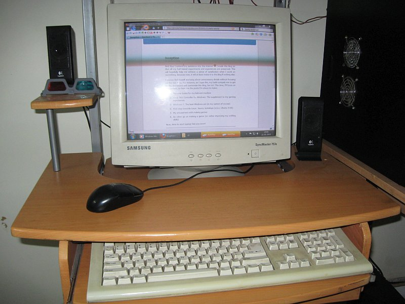
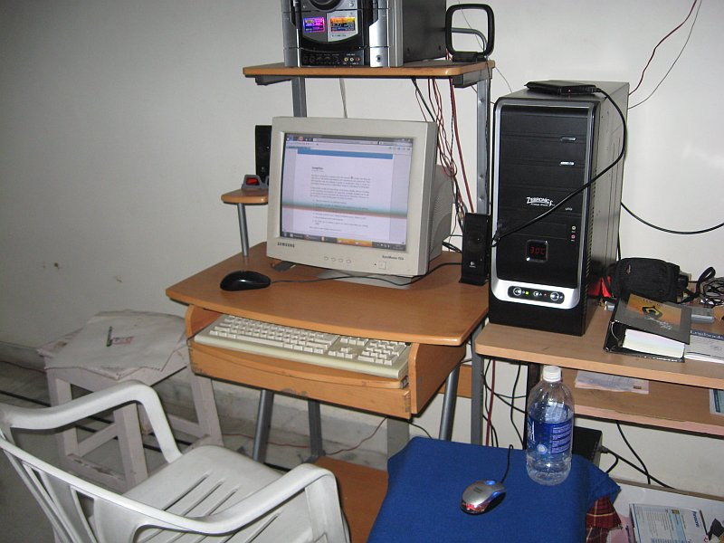
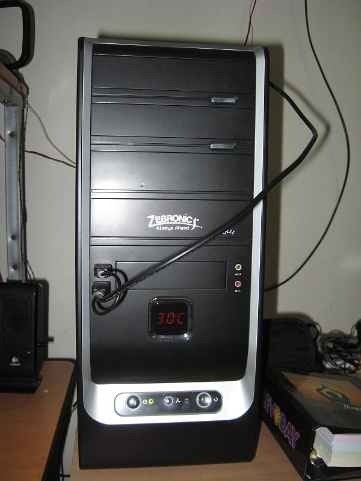
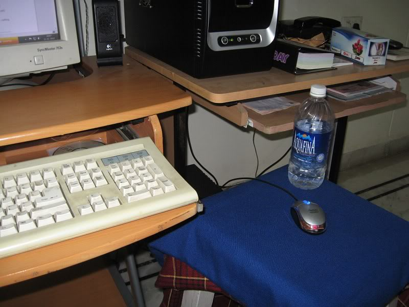

The new brains for my machine
On my 18th birthday, I got the best birthday present I ever received: a bank account, with a checkbook, debit card and all. It was a bit intimidating but satisfying all the same. For my 19th birthday, I got the second-best birthday present. I got a new CPU for our home PC.
It started out as just a thought, my mom wanting to add a very generous amount to my bank account. I started ways of spending the money even before I got it, and I was thinking of an upgrade to my CPU. My dad humored the thought and decided to fill in the gaps of the money I needed to buy what I wanted. We set out and eventually, we ended up with a brand-new CPU altogether! It was bought on 17th August 2009.
My old rig was OK, but the processor and RAM were starting to become a bit outdated, with 1.67 GHz and 512 MB. The hard disk space was a modest 80 GB (40 + 40). Now, behold the new heart of my machine:
New Hardware:
- Motherboard: Intel DG41RQ
- Processor: Intel Core 2 Quad Q8400 (2.66 GHz)
- Memory: 2 x 2GB RAM Transcend JM800QLU-2G
- Harddisk: Seagate ST3500418AS (500GB)
- Graphics Card: Sparkle GeForce 9800GT
- Gamepad: Xbox 360 Controller For Windows (Wired)
- Cabinet: Zebronics Calyx
Old Hardware:
- Monitor: Samsung SyncMaster 753s (17 inch CRT)
- Keyboard: TVS Gold (Generic 104 Keys Keyboard)
- Mouse-1: Quantum Optical USB Mouse (Mostly for general work, it’s crude, but fast)
- Mouse-2: Logitech Optical PS2 Mouse (I use this for precise work like Photoshoping and Blender)
- Speakers: Logitech S100 Black
- Optical Drive: LG DVD Rewriter (Model: GSA-H44N)
The graphics card was actually a late purchase, a result of extensive research and collecting money, and it’s the component I’m enjoying most along with 500 gigs of hard disk space. Finally, I bought the Xbox 360 controller very recently (less than a month ago).
Now, some pics to spice things up.
Close view of the workspace: 
The complete setup: 
The CPU with a simple ambient temperature indicator: 
The right hand’s home: 
It’s ergonomic heaven, except for the mouse. It could do with a few inches of height (5, to be precise), but it’s good enough for me. All in all, I’m quite happy. I’m able to play Crysis with an average of 40 FPS, Tom Clancy’s H.A.W.X at an average of 100 FPS, you get the drift. Recently, I’ve been trying my hand at Blender, that’s another area the graphics card helps.
Until next time folks, take care :)